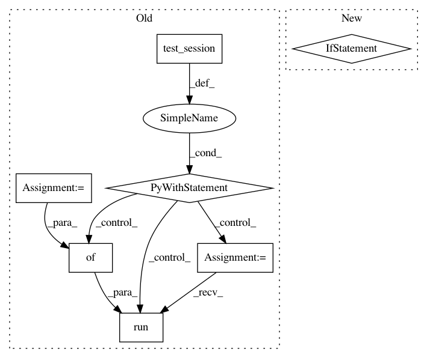

e61955b5553d98b4346817e0e9161f79fb23a40c,sonnet/python/modules/nets/mlp_test.py,MLPTest,testTranspose,#MLPTest#Any#Any#,185
Before Change
self.assertEqual(mlp_transpose.layers[i].output_size,
mlp.layers[-1 - i].input_shape[1])
data = np.random.rand(self.batch_size, self.input_size)
init = tf.global_variables_initializer()
with self.test_session() as sess:
sess.run(init)
sess.run(mlp_transposed_output, feed_dict={input_to_mlp: data})
variables = mlp_transpose.get_variables()
if use_bias:
self.assertEqual(len(variables), len(self.output_sizes) * 2)
After Change
self.assertEqual(mlp_transpose.use_bias, mlp.use_bias)
self.assertEqual(mlp_transpose.activate_final, mlp.activate_final)
if not tf.executing_eagerly():
if activate_final:
self.assertEqual(mlp_transposed_output.op.type, "Relu")
elif use_bias:
self.assertEqual(mlp_transposed_output.op.type, "Add")
else:
self.assertEqual(mlp_transposed_output.op.type, "MatMul")
for i in range(0, len(mlp.layers)):
self.assertEqual(mlp_transpose.layers[i].output_size,
mlp.layers[-1 - i].input_shape[1])
In pattern: SUPERPATTERN
Frequency: 3
Non-data size: 7
Instances
Project Name: deepmind/sonnet
Commit Name: e61955b5553d98b4346817e0e9161f79fb23a40c
Time: 2018-07-17
Author: tomhennigan@google.com
File Name: sonnet/python/modules/nets/mlp_test.py
Class Name: MLPTest
Method Name: testTranspose
Project Name: tensorflow/models
Commit Name: 5e854f25098ca40a4ac80197607bf883feaeb375
Time: 2018-02-13
Author: lzc@google.com
File Name: research/object_detection/utils/learning_schedules_test.py
Class Name: LearningSchedulesTest
Method Name: testManualStepping
Project Name: tensorflow/models
Commit Name: 5e854f25098ca40a4ac80197607bf883feaeb375
Time: 2018-02-13
Author: lzc@google.com
File Name: research/object_detection/utils/learning_schedules_test.py
Class Name: LearningSchedulesTest
Method Name: testCosineDecayWithWarmup